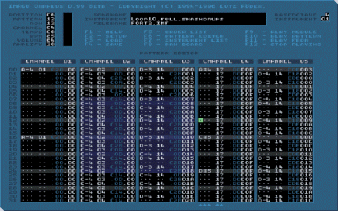
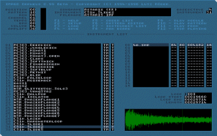

IMAGO Orpheus is a track-based sequencing system developed for creating soundtracks for computer games and multimedia presentations.

Orpheus features a 32 channel editor and an internal patch manager with 40+ editing functions.
The internal player shows six graphical displays and supports multiple trace modes.
Built-in 32-bit harddisk recording stores the music in WAV format.

The program supports IMAGO Orpheus music files (IMF),
Fasttracker II Extended modules (XM), Protracker/Fasttracker modules (MOD),
Scream Tracker 3.2 modules (S3M) and General MIDI (MID) files.